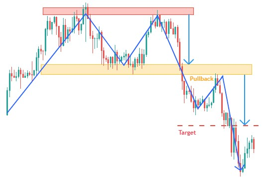
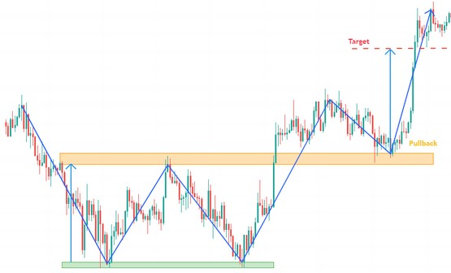

- Figures chartistes : Double Top / Bottom -
Le double top / bottom est une figure chartiste ayant la forme d'un "M ou W". Le cours effectue successivement deux sommets / creux approximativement au même niveau, témoignant d'une importante résistance / support.
Cette figure chartiste marque la volonté des investisseurs à ne pas laisser le cours atteindre de nouveaux plus hauts / bas, et leur volonté de faire retourner la tendance en cours.
L'amplitude des deux sommets est normalement identique, mais il arrive fréquemment que le premier sommet soit plus haut ou plus bas que le deuxième.
Validité :
La figure n'est validée définitivement qu'à la cassure de la ligne de cou.
Double Top

Double Bottom

75% le mouvement est baissier après un double top.
83% le cours casse la ligne de cou de la figure.
71% l'objectif de la figure est atteint lorsque la ligne de cou est cassée.
83% le mouvement baissier se poursuit à la cassure de la ligne de cou.
61% le cours effectue après sortie un pullback en résistance sur la ligne de cou.
70% le mouvement est haussier après un double Bottom.
67% l'objectif de la figure est atteint lorsque la ligne de cou est cassée.
97% le mouvement haussier se poursuit à la cassure de la ligne de cou.
59% le cours effectue après sortie un pullback en support sur la ligne de cou.
L'objectif de la figure est calculé en reportant la hauteur de la figure sous la ligne de cou.
Ils existent différentes représentation en double top / bottom:
En forme de pic (on parle alors de sommet / creux en Adam) ou de forme arrondi (on parle alors de sommet / creux en Eve).
- Une fois l'objectif de cours atteint, le mouvement est généralement moins important si le cours a effectué un pullback.
- Plus les deux sommets de la figure sont proches, plus le pourcentage de réussite de la figure est important.
- Plus le mouvement ayant précédé la formation de la figure est important, plus le mouvement à la cassure de la ligne de coup sera puissant.